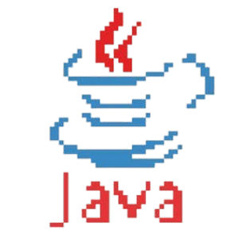

Computer Science student at the Polish-Japanese Academy of Information Technology, specializing in database systems. I have hands-on experience in backend development using C# (ASP.NET Core) and Node.js, and I’m skilled in SQL, Java, Kotlin, and Python. My passion lies in building efficient, scalable systems and solving real-world problems. I’ve developed full-stack applications like social platforms and management systems, and I enjoy exploring new technologies to sharpen my craft.
Tech Stack
